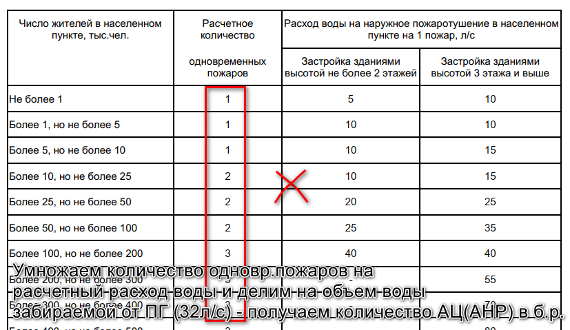

Ежедневный отчет
Пятница. Расчеты для Красноярска – завершение.
gantt
title Ход работы
dateFormat HH:mm
axisFormat %H:%M
section 1. Общая работа
Подведение итогов, планирование :a1, 17:00, 30m
Обсуждение подходов к расчету количества АЦ с ГУПО :a2, 15:00, 15:30
section 2. Расчет Красноярск
Обсуждение подходов к расчету количества АЦ :b1, 08:30, 09:30
Окончание отчета по расчетам :b2, 09:30, 12:00
Оформление отчета :b3, 13:00, 18:30
Расчет Красноярск
Обсуждение подходов к расчету количества АЦ
Обсудили с Мартиновичем как можно считать требуемое количества автоцистерн согласно приказа МЧС России №700. В данном приказе нет ясности как именно определять требуемое количество основных пожарных автомобилей.
Сошлись на том, что исходя из контекста можно попытаться определить количество АЦ по СП 8.13130.2020 Системы противопожарной защиты. Наружное противопожарное водоснабжение.
Выбираем из таблицы 1 СП количество одновременных пожаров для данного населенного пункта, умножаем на расход воды и делим на объем воды забираемой одной АЦ - получаем количество основных ПА в боевом расчете. Добавляем резерв и т.д. Примерно так.

Однако такой подход спорный, так как однозначно он нигде не описывается, кроме того не ясно какое значение производительности брать.
Оформление отчета
Наконец почти закончил отчет по расчетам. Использовал для оформления Quarto. Получилось очень неплохо и вполне удобно. Однако оформление в виде документа Word по прежнему оставляет желать лучшего. Вместе с тем, опробовал подход сбора документа из нескольких фрагментов - невероятно удобно. Получилось, что расчет в одном месте, титульный лист в другом, список литературы в третьем и т.д. И получается, что для разных целей можно формировать разные документы.
flowchart LR
A[расчет]
B(отчет)
C[термины]
D(статья)
E(блог)
A --> B
A --> D
A --> E
C --> B
C --> D
Пример некоторых карт:
Общая работа
Обсуждение подходов к расчету количества АЦ с ГУПО
ГУПО в разговоре отвергло предложение описанное выше. Однако никакой ясности так и не появилось. Было сообщено, что на данный момент способов расчета основных ПА не существует. Однако, ВНИИ ПО на 2023-2024 годы поставило НИР по данной теме (да и вообще по всему 700 приказу)